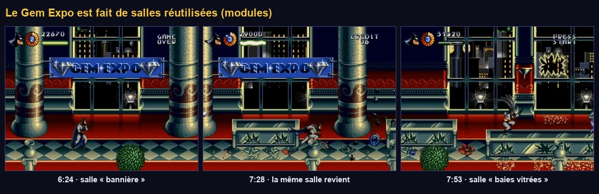
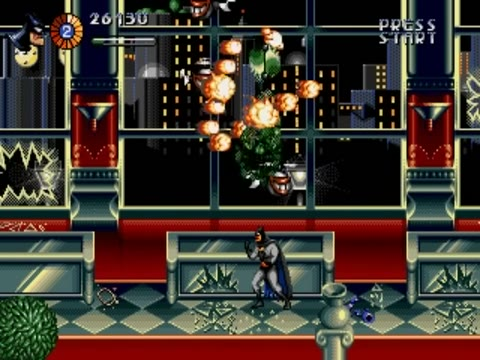
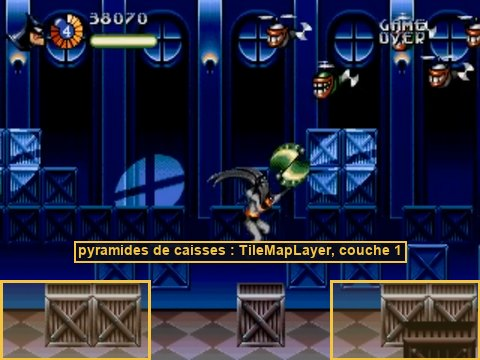
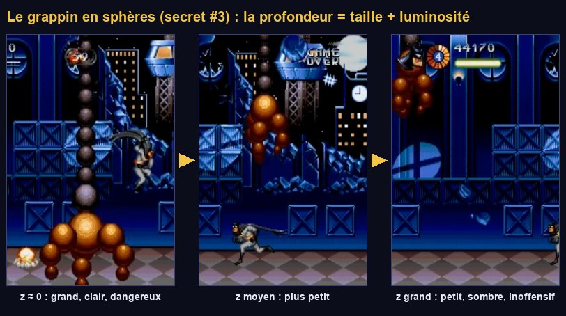

Section 2 : Gem Expo et grappin
Une exposition de joyaux construite en salles réutilisables, un entrepôt peint en tuiles, une apparition d'Harley pour annoncer la suite, puis le morceau de bravoure technique du niveau : le grappin de grue en sphères qui plonge dans la profondeur.
Ce que tu vas apprendre
Godot 4
- Scènes comme modules de niveau
Parallax2Den pratiqueTileSetetTileMapLayeravec collisionsTweenchaînés et parallèlesz_index,Vector3en 2D
Développement de jeu
- Construire avec des modules
- L'annonce d'un boss
- La projection perspective
- L'algorithme du peintre
- La vulnérabilité liée à la profondeur
Le Gem Expo
11.1 · Observer la répétition

La même salle revient plusieurs fois : colonnes de marbre, bannière « GEM EXPO », vitrines, plantes en pot (6:24, 7:28, 8:32). Elle alterne avec une salle à grandes baies vitrées sur la ville (7:51).
Une cartouche de 1995 n'avait pas la place pour un décor unique de plusieurs milliers de pixels : les niveaux étaient faits de blocs et de salles réutilisés. Dans Godot, une salle est une scène qu'on instancie bout à bout. Corriger un détail dans la salle le corrige partout. Les arènes et les ennemis restent dans la scène de section : chaque instance de salle peut accueillir un combat différent.
11.2 · Deux salles
- Salle « bannière » : nouvelle scène 2D
res://sections/s2/expo_hall.tscn, racineExpoHall. Elle fait 640 px de large. Contenu, en formes de substitution :- un mur (
ColorRect640×200, beige) de y = 0 à 200 ; - trois colonnes (
ColorRect32×200, blanc cassé) à x = 80, 300, 520 ; - une bannière (
Label« GEM EXPO » sur unColorRectrouge) en haut ; - deux vitrines basses : chacune un
StaticBody2D(couche 2, forme one-way 48×8) avec unColorRectvitré de 48×24, posées sur le sol.
- un mur (
- Salle « baies vitrées » : →
expo_windows.tscn. Remplace le mur plein par deux murs de part et d'autre d'une grande ouverture (x = 160 à 480, y = 40 à 160) : on verra la ville à travers. Dans l'ouverture, deux vitresBreakable(Health 1, Hurtbox couche 6, Broken Texture = une image de vitre étoilée, ou rien).
Les salles ne contiennent pas de sol. Mettre bout à bout des sols séparés crée des jointures sur lesquelles un personnage peut accrocher. Le sol est un seul long StaticBody2D dans la scène de section ; les salles n'apportent que le décor et les meubles.
Mesure du guide : les colonnes défilent exactement à la vitesse du mur et Batman passe devant elles. Ce sont des éléments du décor, au même plan que le mur : pas besoin de couche à part, ni de parallaxe. Mesurer avant de coder évite d'ajouter un effet qui n'existe pas.
11.3 · La section et la skyline
- Nouvelle scène 2D
res://sections/s2_gem_expo.tscn, racineS2GemExpo(scriptsection.gd), en (0, 0). - Construis l'arbre. Skyline doit être le premier enfant : les nœuds sont dessinés dans l'ordre de l'arbre, donc elle sera derrière les salles.
S2GemExpo (Node2D, section.gd) next_scene = level_end.tscn (provisoire) · player = Player ├── Skyline (Parallax2D) scroll_scale (0.3, 0) · repeat_size (640, 0) │ └── Buildings (Node2D) quelques ColorRect sombres de hauteurs variées, sur 640 px ├── World (Node2D) │ ├── Ground (StaticBody2D) couche 1 · rectangle 4400×16 en (2200, 208) │ ├── Hall1 (expo_hall.tscn) x = 0 │ ├── Windows1 (expo_windows.tscn) x = 640 │ ├── Hall2 (expo_hall.tscn) x = 1280 │ ├── Windows2 (expo_windows.tscn) x = 1920 │ ├── Hall3 (expo_hall.tscn) x = 2560 │ ├── ArenaA, ArenaB (WaveArena) dans les salles │ ├── Warehouse (Node2D) à partir de x = 3200 (11.5) │ ├── HarleyFlyby (Area2D) (11.6) │ └── BossArena → CraneHarley (11.8) ├── EnemyBullets (Pool) · Player · Camera (camera_rig.gd) · Hud
- Dans la section 1, remplace Next Scene par
res://sections/s2_gem_expo.tscn.
F6 sur la section 2 : en courant, les salles défilent avec le sol, et la ville, visible par les baies, défile trois fois moins vite. Les vitres se brisent sous les tirs. Monte sur les vitrines.
11.4 · Les vagues de têtes à hélice

- Dans
ArenaA(vers x = 450), place deuxFormationenfants :- « Chenille » : une courbe qui descend à la verticale depuis le haut de l'écran, puis serpente vers la gauche. 8 membres,
delay0,3 s. - « Ligne » : une courbe horizontale en haut de l'écran, de droite à gauche. 6 membres,
delay0,25 s.
- « Chenille » : une courbe qui descend à la verticale depuis le haut de l'écran, puis serpente vers la gauche. 8 membres,
- Vague 1 de
ArenaA: quelques clowns (quota 4) + Formation = Chenille. Vague 2 : quota 4 + Formation = Ligne. ArenaB(vers x = 2 000) : clowns, costauds et tireurs, comme une arène de la section 1.
La chenille descend puis serpente, la ligne traverse le haut de l'écran, et toutes deux bombardent pendant que les clowns arrivent. La première vague lance sa formation dès l'entrée dans l'arène sans erreur dans la console : c'est le démarrage différé de WaveArena (étape 07) qui le permet.
L'entrepôt
11.5 · Peindre des caisses avec une TileMapLayer

TileSet et TileMapLayerUne TileMapLayer peint une grille de tuiles prises dans un TileSet. Chaque tuile peut porter une forme de collision : peindre une caisse, c'est aussi créer son sol et ses murs. C'est l'outil standard pour construire des niveaux 2D (et l'héritier direct des métatuiles de la Mega Drive). TileMapLayer remplace l'ancien TileMap depuis Godot 4.3.
D'abord, des images de test pour cette section : des caisses, et les sphères du grappin (11.7).
- Exécute
make_debug_s2.gd. - Sous
Warehouse, ajoute uneTileMapLayernomméeCrates. Inspecteur → Tile Set → Nouveau TileSet, puis clique dessus : Tile Size = 16×16. - Toujours dans le
TileSet: Physics Layers → Ajouter un élément. Règle sa Collision Layer sur la couche 1 seule (« monde »). - Panneau TileSet (en bas) : glisse
crates.pngdans la liste des sources et accepte la création automatique des tuiles. - Onglet Sélectionner du panneau TileSet, choisis une tuile → Physics → Physics Layer 0 : dans l'éditeur de polygone, appuie sur F pour remplir toute la case. Recommence pour l'autre tuile.
- Onglet TileMap du panneau : choisis une tuile et peins dans la vue 2D (clic gauche peint, clic droit efface). Dessine trois ou quatre pyramides de caisses posées sur le sol, de x = 3 200 à 3 900. Une case fait 16 px : le sol est à y = 200, donc la rangée du bas va de y = 184 à 200.
Batman monte de marche en marche (une marche de 16 px se franchit en sautant), les clowns butent contre les caisses. Active les formes de collision visibles : chaque caisse a son carré.
11.6 · Harley passe : une annonce en pleine partie
À 9:25–9:29, Harley traverse l'écran en diagonale dans son fauteuil-fusée, sans combattre. Le joueur sait désormais qui l'attend.
Montrer l'adversaire avant le combat crée de l'attente et donne du sens au parcours. C'est une technique de mise en scène vieille comme le cinéma, et presque gratuite à réaliser : un sprite et une trajectoire.
- Crée
res://bosses/crane_harley/harley_flyby_sprite.tscn: unSprite2D(white.png, scale (1,5 ; 1,2), modulate rose). - Sous
World, uneArea2DHarleyFlyby(masque 3, forme 8×224) vers x = 3 500, scriptharley_flyby.gd, Harley Scene = la scène du sprite.
TweenUn Tween anime une propriété d'une valeur à une autre sur une durée, avec une courbe d'accélération (TRANS_SINE, EASE_IN_OUT : départ et arrivée en douceur). Les appels s'enchaînent : tween_callback s'exécute une fois l'animation précédente terminée. Créé sur le nœud animé (h.create_tween()), il s'arrête avec lui.
En arrivant vers x = 3 500, un rectangle rose traverse l'écran en diagonale, de bas en haut, en accélérant puis en ralentissant, et disparaît.
Le grappin en sphères
11.7 · La projection perspective

- Des sphères : sous n'importe quel angle, une sphère reste un disque avec son reflet au même endroit. Pas besoin de rotation.
- Environ 20 sphères, chacune un sprite.
- 4 tailles de sphère orange et 2 de sphère noire, pré-calculées : pas de mise à l'échelle.
- Une vraie position 3D, projetée à l'écran.
- Quand le bras part vers le fond, il s'assombrit.
On décrit le bras en 3D (x à droite, y vers le bas, z vers le fond). Pour l'afficher, on divise par la profondeur : un point deux fois plus loin paraît deux fois plus petit et deux fois plus proche du centre. Avec une « focale » f : s = f / (f + z), puis écran = (x, y) × s. Le facteur s donne aussi la taille apparente et la luminosité. C'est toute la « 3D » du jeu.
Comprendre le code
- Une seule vérité, la position 3D : les états (
TRACK,DROP…) ne modifient quehub(unVector3) etopen._layout()en déduit tout le reste à chaque image : position, taille, luminosité et ordre de dessin des 23 sphères. _place()fait trois choses avec le même facteurs: la position (projection), la taille (choix parmi les images pré-calculées, viaframe), la luminosité (4 paliers, comme 4 palettes de plus en plus sombres).z_index = -z: l'algorithme du peintre. Sans tampon de profondeur, on dessine du plus lointain au plus proche. Godot trie les enfants parz_index; sur la console, le programme triait la table des sprites à chaque image.claw_hitbox.monitoringn'est vrai que pendant la frappe et dans le plan du joueur (|z| < 12). Ce qui a l'air loin ne touche pas.call_group("camera", "shake", …): le tremblement n'existe qu'à l'étape 13. D'ici là, personne n'est dans le groupecamera, et l'appel ne fait rien.
11.8 · Harley, son fauteuil et le mini-boss
- Nouvelle scène
res://bosses/crane_harley/crane_harley.tscn, racineNode2DCraneHarley, scriptcrane_harley.gd:
CraneHarley (Node2D, crane_harley.gd) score_value = 5000
├── Health max_health = 80 (À CALIBRER)
├── Arm (Node2D, sphere_arm.gd) origine = point d'accroche de la chaîne (haut de l'écran)
│ └── ClawHitbox (Hitbox) couche vide · masque 5 · damage 2
│ └── CollisionShape2D cercle de rayon 14
└── Harley (Node2D, harley_chair.gd)
├── Sprite2D white.png scale (1,5 ; 1,2), rose · matériau hit_flash (Local To Scene)
├── Hurtbox couche 6 · health = Health
│ └── CollisionShape2D rectangle 22×18
└── HitFlash target = Sprite2D · hurtbox = Hurtbox
Arm: Orange Sphere =sphere_orange.png, Dark Sphere =sphere_dark.png.Harley: Bomb Scene =harley_bomb.tscn(la variante sans rebond de l'étape 09).- Dans la section, une
BossArenaen (4 200, 112), avecCraneHarleycomme enfant en position locale (0, -112) : le point d'accroche est en haut de l'écran (y = 0). Exports : Boss, Section. - Prolonge le sol jusqu'à x = 4 500 si besoin.
- À l'entrée de l'arène, la pastille « 99 » apparaît. Le grappin suit Batman, s'abat (explosion au sol), se referme, remonte.
- Parfois, il part dans le fond : il rapetisse, s'assombrit, et passe derrière la chaîne. Pendant ce temps, il ne fait pas mal.
- Harley vole en huit dans le haut de l'écran et lobe des bombes là où se trouvait Batman. Il faut la viser en diagonale haute.
- À 00 : Harley part en vrille, s'écrase, explosions, le grappin remonte, pose de victoire, +5 000, puis la scène suivante.
- Les sphères sont toutes de la même taille : la texture n'a pas le bon nombre de cases (4 pour l'orange, 2 pour le sombre), ou le générateur n'a pas été exécuté.
- Le grappin ne bouge pas : c'est normal avant le début du combat (
set_physics_process(false)) ; vérifie que l'arène lance bien le boss. - Le grappin ne touche jamais : masque 5 sur
ClawHitbox, et vérifie queground_yamène la pince jusqu'à la hauteur de Batman (le sol est à 200 px sous le point d'accroche).
Quand le grappin passe dans le fond, il est plus petit, plus sombre et inoffensif : le visuel dit la vérité sur le gameplay. Règle d'or de toute pseudo-3D : ce qui a l'air loin ne doit pas toucher. Tu retrouveras la même règle avec la montgolfière du Joker.
Point de contrôle
- Le Gem Expo s'assemble avec deux salles réutilisées ; la ville défile plus lentement derrière les baies.
- Une chenille de têtes à hélice descend puis serpente ; une ligne traverse le haut de l'écran.
- L'entrepôt est peint en tuiles avec collisions ; Harley passe en diagonale sans combattre.
- Le grappin suit Batman, s'abat, se referme, remonte et parfois s'enfonce dans le fond, plus petit et plus sombre.
- Harley vole et lobe des bombes. À 00 : vrille, crash, K.O., +5 000, section suivante.
Ce que tu retiens
Pourquoi les salles n'ont-elles pas leur propre sol ?
Des sols séparés bout à bout créent des jointures où un personnage peut accrocher. Un seul sol continu dans la section évite le problème ; les salles n'apportent que le décor et les meubles.
Que donne la formule s = f / (f + z) ?
Le facteur de réduction d'un point situé à la profondeur z : 1 au premier plan (z = 0), de plus en plus petit en s'éloignant. On l'utilise pour la position à l'écran, pour choisir l'image de la bonne taille et pour la luminosité.
À quoi sert z_index = -z ?
À trier l'affichage : les sphères les plus proches (z petit) ont un z_index plus grand et sont dessinées par-dessus les lointaines. C'est l'algorithme du peintre.
Pourquoi peindre les caisses avec une TileMapLayer plutôt qu'avec des StaticBody2D ?
Parce que chaque tuile porte son image et sa collision : peindre une pyramide crée à la fois le décor et le sol. On construit, modifie et efface un niveau à la souris, en quelques secondes, sans gérer des dizaines de nœuds.
Pour aller plus loin
- Remplace
modulatepar des sphères indexées etindexed.gdshaderavec une palette de 4 lignes (étape 08) : la fidélité totale. - Ajoute une ombre au sol sous le grappin (une ellipse sombre dont la taille dépend de
hub.y) : elle aide le joueur à anticiper l'impact. - Lis le tome 08 du guide, et regarde la vidéo de Jon Burton sur le bras de grue.